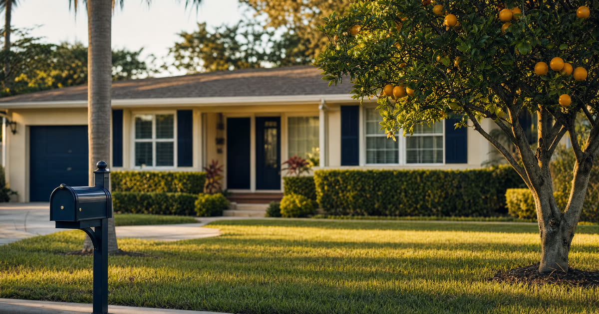

Pauline's Question: Will Ann Lose Her Benefits?
Pauline is 82 and lives in a modest homestead in Tampa. Her daughter Ann, 50, has lived with her for years, receives Supplemental Security Income and Medicaid, and depends on both to get by. Pauline wants Ann to have the house when she is gone, but she has heard that inheriting property can knock a person off SSI, and she does not want to help Ann into a corner. Pauline is a composite drawn from the kinds of families I sit down with regularly, not an actual client, but her worry is one I hear often.
The short answer is that it depends entirely on how the house passes to Ann and what Ann does with it afterward. The deed itself is simple. A lady bird deed lets Pauline keep full control of the home during her life, including the right to sell it or change her mind, and it passes the property to her named beneficiary automatically at death without going through probate. What happens to Ann's benefits afterward depends on what she inherits and how.
Have this exact situation? Talk it through with a Florida attorney — the 20-minute consultation is free.
Book Free Consult or call (888) 388-8445The Home as an Exempt Resource, But Only While Ann Lives There
SSI has strict limits on how much a recipient can own. A home is generally treated as an exempt resource for SSI and Medicaid purposes as long as the recipient lives in it as their primary residence. So if Ann inherits the Tampa house through a lady bird deed and continues living there, the house itself typically will not count against her SSI resource limit, because it is her home, not cash sitting in an account.
The exemption is tied to occupancy and use, not to the label on the deed. If Ann moves out permanently, rents the home to someone else, or otherwise stops treating it as her residence, the exemption can be lost and the value of the house may start counting toward her resource limit.
The Real Danger: What Happens If the House Is Sold
The exemption protects the home while Ann lives in it. It does not protect the cash if the home is ever sold. If Ann inherits the house outright and later sells it, whether by her own choice, because she can no longer maintain it, or because a guardian or family member decides it makes sense, the sale proceeds become countable cash. SSI's resource limit for an individual is quite low, and it does not take much money in a bank account to push someone over that line.
There is a second problem for a beneficiary like Ann. If she is not able to manage real property, sign closing documents, pay property taxes, or handle maintenance and insurance on her own, inheriting a house outright can trigger the need for a guardianship or guardian advocate proceeding just to deal with the property. That is a real cost and a real burden that Pauline can plan around now.
The Better Structure: A Supplemental Needs Trust as Remainder Beneficiary
For a family in Pauline's position, the more protective approach is usually not to name Ann directly on the lady bird deed at all. Instead, Pauline can name a properly drafted third-party supplemental needs trust (sometimes called a special needs trust) as the remainder beneficiary. Pauline keeps her lady bird deed's full lifetime control, the right to sell, refinance, or revoke, and at her death the house passes to the trust rather than to Ann personally, still without probate.
- Because Ann does not own the house or the trust's assets outright, the property and any later sale proceeds generally do not count as Ann's resource for SSI or Medicaid purposes.
- The trust can pay for things that improve Ann's quality of life, such as home upkeep, therapies, or personal items, without disqualifying her from benefits, as long as it is drafted and administered correctly.
- A third-party trust (funded with a parent's own assets, not the beneficiary's) is treated differently than a self-settled trust, and it does not carry the same payback requirements to the state that a self-settled special needs trust does.
This is a deliberate planning choice, not something to improvise. The trust has to be drafted so that Ann has no direct control over principal and no legal right to demand distributions, or it will not accomplish its purpose. This is also where a lady bird deed differs from some of the do-it-yourself trust products marketed online: the deed and the trust need to work together, with consistent language about who actually holds the remainder interest.
Coordinating the Deed With Pauline's Will and Overall Plan
A lady bird deed only controls the house. Pauline's will or trust should say the same thing about the rest of her estate that the deed says about the house, so there is no conflict between documents. If Pauline's will leaves everything equally to Ann and her siblings but the deed sends the house to a supplemental needs trust for Ann's benefit, the plan needs to account for that so the siblings understand the structure and so Ann's share is not accidentally duplicated or shortchanged.
There is also a separate rule worth knowing for Pauline's own Medicaid planning, if she ever needs long term care. Florida generally exempts a homestead from Medicaid estate recovery when it passes to certain protected heirs, including a disabled child, regardless of the child's age. This is a different question from Ann's SSI resource limit, but it means Pauline's own long-term care planning and Ann's inheritance planning can often work in Ann's favor rather than against each other. Because homestead property owned by a married person cannot be conveyed or devised without the spouse joining, this planning looks different for a widow like Pauline than it would for a married couple, and it is worth confirming her marital and title history before any deed is signed.
Frequently Asked Questions
The Truestead Takeaway
For Pauline, the lady bird deed itself was never the hard part. Signing it lets her keep full control of her Tampa home for the rest of her life and avoid probate at the end, and that much is straightforward. The real decision is who she names as the remainder beneficiary. Naming Ann outright risks Ann's SSI and Medicaid the moment the house is ever sold, while naming a properly drafted supplemental needs trust lets the house (and later, if needed, its sale proceeds) support Ann without counting against her benefits. Every family's facts differ, particularly around existing wills, marital history, and how a disabled beneficiary's needs are best served, so this is a plan to build with a Florida attorney rather than a form to fill in alone.
Have a child turning 18? Get the free 18 & Protected packet — the legal documents every Florida 18-year-old needs.
Get the Free PacketGet Your Florida Lady Bird Deed
Truestead prepares Florida Lady Bird (enhanced life estate) deeds: $199 self-guided from your answers, or $399 attorney-prepared and recorded for you, with the homestead and documentary-stamp guardrails the form sites skip.
Start Your Lady Bird Deed →This article is for general informational purposes only and does not constitute legal advice, nor does reading it create an attorney-client relationship. Florida estate, elder, probate, and real estate law are fact-specific and change over time. Consult a licensed Florida attorney about your individual circumstances. Arthur Simpson, Esq. is licensed to practice law in the State of Florida. Attorney advertising.
Talk to a Florida Attorney — Free 20-Minute Consultation
Pick a time below. No obligation, no pressure — just answers.